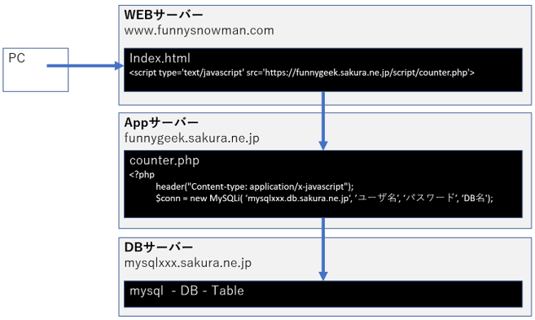
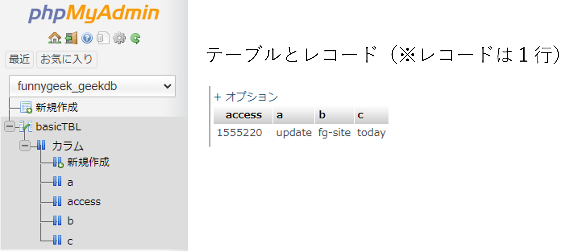

WEBサイトを表示した回数をカウントする。PHPスクリプトでカウンターアプリを作る。DBはMySQLを起動する。

▼index.html
<html>
<head></head>
<body>
<p><script type='text/javascript' src='https://funnygeek.sakura.ne.jp/script/counter.php'></script></p>
</body>
</html>
<?php
header("Content-type: application/x-javascript");
$conn = new MySQLi( ‘mysqlxxx.db.sakura.ne.jp’, ‘ユーザ名’, ‘パスワード’, ‘DB名');
$conn->set_charset('utf8');
// SQL実行
$sql = 'SELECT `access` FROM `basicTBL` WHERE 1';
$result = $conn->query( $sql );
$row = $result->fetch_assoc();
$i = $row['access’];
// SQL結果を返す（index.htmlに結果を書き出す）
echo 'document.write("Visited [' . (string) $i . ']");';
$num = intval($i) + 1;
$sql = 'UPDATE `basicTBL` SET `access`=' . (string) $num . ' WHERE 1';
$result = $conn->query( $sql );
// 結果セットを開放してDBクローズ
$conn->close();
?>
